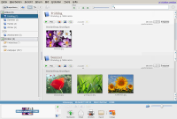
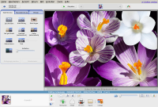

Picasa
Achtung!
Picasa wird am 15. März 2016 endgültig eingestellt  . Schon seit dem Erscheinen von Picasa 3.9 im Dezember 2011 ist keine Linux-Version mehr verfügbar .
. Schon seit dem Erscheinen von Picasa 3.9 im Dezember 2011 ist keine Linux-Version mehr verfügbar .
Die Installation der Windows-Version mit Wine ist noch bis März möglich und der einzige Weg zu einer aktuellen Version von Picasa. Diese wird im Artikel Picasa aktualisieren beschrieben.
Der folgende Artikel bezieht sich noch auf die Linux-Version. Obwohl die meisten Beschreibungen zur Funktion weiterhin zutreffen dürften, kann keine Garantie für die Gültigkeit übernommen werden.
Archivierte Anleitung
Dieser Artikel wurde archiviert, da er - oder Teile daraus - nur noch unter einer älteren Ubuntu-Version nutzbar ist. Diese Anleitung wird vom Wiki-Team weder auf Richtigkeit überprüft noch anderweitig gepflegt. Zusätzlich wurde der Artikel für weitere Änderungen gesperrt.
Zum Verständnis dieses Artikels sind folgende Seiten hilfreich:
Picasa ist eine plattformübergreifende Bildverwaltungssoftware für digitale Photos. Sie wird von Google entwickelt und lag auch in einer eigenen Linux-Version vor. Allerdings war Picasa für Linux nie eine native Anwendung, sondern es wurde die Windows-Version mit einer eigens angepassten Wine-Version kombiniert. Als Anwender merkte man davon aber wenig. Hauptsächlich sah man es daran, dass sich Picasa optisch nicht in die Desktop-Umgebungen wie GNOME oder KDE einfügte.
Das Programm eignet sich besonders für Computereinsteiger. Mit Picasa lassen sich Bilder nicht nur in Ordnern, sondern auch in (virtuellen) Alben organisieren. Neben diesen Verwaltungsfunktionen bietet Picasa auch einfache Funktionen zur Bildbearbeitung, wie zum Beispiel Skalierung, diverse Filter oder das einfache Entfernen von roten Augen. Außerdem gibt es noch den Picasa Media Detector, der Digicams und Speichermedien automatisch als Massenspeicher erkennt und einen Importassistenten anbietet.
Die größte Stärke ist aber die Fähigkeit von Picasa, ein digitales Negativ-Archiv zu führen. Dies setzt allerdings voraus, dass alle Veränderungen eines Bildes ausschließlich durch Picasa selbst vorgenommen werden. Nur dann besteht die Möglichkeit, diese Änderungen auf Wunsch wieder zurückzunehmen.
Im Gegensatz zu anderen Google-Produkten müssen beim Einsatz von Picasa keine persönlichen Daten preisgegeben werden. Das gilt aber nicht zwangsläufig auch für die speziell auf Google abgestimmten Funktionen des Programms wie Erstellen eines Picasaweb-Albums  , das Bestellen von Papierabzügen oder das Einrichten eines Blog auf Blogger.com . Daher sind diese Funktionen nicht Gegenstand dieses Artikels. Ferner erreichte der Funktionsumfang der Linux-Version nicht den der Windows-Version.
, das Bestellen von Papierabzügen oder das Einrichten eines Blog auf Blogger.com . Daher sind diese Funktionen nicht Gegenstand dieses Artikels. Ferner erreichte der Funktionsumfang der Linux-Version nicht den der Windows-Version.
Picasa ist bei nicht-kommerzieller Nutzung zwar kostenlos, aber keine freie Software. Wer darauf Wert legt, kann auf Programme wie Shotwell, F-Spot, digiKam oder gThumb ausweichen, die einen ähnlichen Funktionsumfang bieten.
Installation¶
 In der Vergangenheit wurden drei Versionen für Linux veröffentlicht: eine ältere Version 2.2, die stabile Version 2.7 und eine Beta-Version 3.0 (letztere nur in Englisch). Alle diese Versionen sind offiziell nicht mehr verfügbar.
Wer dennoch Picasa unter Linux nutzen möchte, dem sei die Windows-Version 3.8  empfohlen, die sich mit Wine installieren lässt. Wie das geht, ist im eigenen Artikel Picasa aktualisieren beschrieben. Für den Einsatz in Kombination mit Google+ wird die Version 3.9 oder neuer benötigt, die weitere Maßnahmen erfordert, bis sie funktioniert (geändertes Authentifizierungsverfahren, Installation des Internet Explorers).
empfohlen, die sich mit Wine installieren lässt. Wie das geht, ist im eigenen Artikel Picasa aktualisieren beschrieben. Für den Einsatz in Kombination mit Google+ wird die Version 3.9 oder neuer benötigt, die weitere Maßnahmen erfordert, bis sie funktioniert (geändertes Authentifizierungsverfahren, Installation des Internet Explorers).
Experten-Info:
Aktuelle Picasa-Versionen sind nur noch für Windows und Mac OS X erhältlich.
Ende September 2009 erschien Picasa 3.5 (nur in Englisch). Neu waren eine automatische Gesichtserkennung und die Möglichkeit, Geotags mittels einer integrierten Google Maps Karte zu setzen. Die im Dezember 2009 vorgestellte deutsche Version 3.6 brachte als einzige Änderung die gemeinsame Bearbeitung von Picasa Webalben und kleine Hilfen zum mehrfachen Setzen von Stichwörtern. Picasa 3.8 aus dem Oktober 2010 enthielt als interessante Neuerung die Anzeige von XMP-Daten. Diese werden allerdings nur gemeinsam mit den Exif-Daten dargestellt.
Mit dem Erscheinen von Picasa 3.9 im Dezember 2011 wurde der Vertrieb der (nie aktualisierten) Linux-Version endgültig eingestellt. Neu hinzugekommen sind weitere Effekte, eine Bearbeitungsvorschau vorher/nachher und die Verzahnung mit Google+.
Einstellungen¶

Sprache einstellen¶
Falls Picasa nicht automatisch auf Deutsch erscheint, lässt sich die zu verwendende Sprache unter "Tools -> Optionen" einstellen. Danach muss Picasa neu gestartet werden.
Bedienung¶
Bildquellen einrichten¶
Beim ersten Start von Picasa kann man auswählen, ob der gesamte Rechner (rekursiv) nach Bildern durchsucht werden soll oder nur der "Desktop", was dem Homeverzeichnis des aktuellen Benutzers entspricht. Unter Ubuntu ergibt nur letztere Option einen Sinn.
Möchte man nachträglich weitere Verzeichnisse (z.B. außerhalb des Homeverzeichnisses) hinzufügen, so kann man dies über
"Datei -> Ordner zu Picasa hinzufügen"
machen oder "Tools -> Ordner-Manager" benutzen. Besonders praktisch ist der Ordner-Manager zur Überwachung der ausgewählten Ordner: neue Bilder werden – im Gegensatz zu F-Spot – automatisch erkannt bzw. nicht vorhandene aus Picasa entfernt.
Sind die Bilder eingelesen, sind diese sofort übersichtlich und chronologisch zusammengestellt. Über "Ansicht -> Ordneransicht" lässt sich die Sortierung der linken Spalte dem eigenen Geschmack anpassen.
Bildformate¶
Folgende Bild- bzw. Dateiformate werden - neben dem klassischen JPEG (.jpg) - von Picasa unterstützt:
.tif, .tiff
.bmp
.gif
.psd (Photoshop)
.png
RAW-Formate (.crw, .nef, etc.)
Welche Dateiformate tatsächlich berücksichtigt werden, lässt sich über "Tools -> Optionen -> Dateitypen" einstellen.
Media Detector¶
Picasa bringt ein Programm mit, welches Einsteigern den Bildtransfer von der Digicam zum Rechner erleichtert. Wird eine neu angeschlossene Kamera oder ein USB-Massenspeicher erkannt, hilft ein kleiner Assistent bei der Auswahl eines Bilderordners, in den die Bilder kopiert werden sollen. Nach erfolgreichen Abschluss dieser Aktion kann zusätzlich das Speichermedium gelöscht werden, um dort Platz für neue Bilder zu schaffen. Dazu muss sich der Media Detector aber via Autostart im System verankern. Wer in der Lage ist, seine Bilder manuell auf den Computer zu transferieren, kann dieses Programm über "Tools -> Optionen -> Allgemein" abschalten.
Ein Vorteil des Media Detectors ist allerdings seine Fähigkeit, schon vorhandene Bilder ("Duplikate") automatisch vom Import auszuschließen. Dies ist insbesondere dann nützlich, wenn nach einem Import die Bilder auf dem Speichermedium der Kamera nicht gelöscht worden sind. Ab Picasa 3.0 wird beim Import zusätzlich chronologisch gruppiert, um zusammengehörige Bilder besser erkennen zu können.

Bildbearbeitung¶
Aus der Übersicht ("Bibliothek") kommt man mit einen Doppelklick links  auf ein Bild zur Bildbearbeitung. Hier stehen in drei Kategorien "Optimierung", "Feinabstimmung" und "Effekte" verschiedene Möglichkeiten zur Verfügung, das Bild anzupassen. Die Möglichkeiten sind begrenzt und reichen nicht an die von z.B. GIMP heran, doch für die üblichen Tätigkeiten wie Bilder zuschneiden, rote Augen entfernen, Kontraste anpassen usw. reicht Picasa meist völlig aus. Bilder im Hochformat werden automatisch gedreht, wenn die Bild-Orientierung in den Exif-Daten des Bildes hinterlegt ist. Ab Picasa 3.0 können Bilder auch mit Text versehen ("beschriftet") werden.
auf ein Bild zur Bildbearbeitung. Hier stehen in drei Kategorien "Optimierung", "Feinabstimmung" und "Effekte" verschiedene Möglichkeiten zur Verfügung, das Bild anzupassen. Die Möglichkeiten sind begrenzt und reichen nicht an die von z.B. GIMP heran, doch für die üblichen Tätigkeiten wie Bilder zuschneiden, rote Augen entfernen, Kontraste anpassen usw. reicht Picasa meist völlig aus. Bilder im Hochformat werden automatisch gedreht, wenn die Bild-Orientierung in den Exif-Daten des Bildes hinterlegt ist. Ab Picasa 3.0 können Bilder auch mit Text versehen ("beschriftet") werden.
Picasa verändert die ursprüngliche Bilddatei nicht sofort, d.h. Änderungen sind zunächst nur in Picasa selbst sichtbar - bis diese Änderungen über die entsprechende Schaltfläche in der Übersicht gespeichert werden. Nun legt Picasa automatisch einen Unterordner Originals mit einer Sicherungskopie des Bildes an. Änderungen in Picasa lassen sich mit Hilfe dieser Sicherungskopie nachträglich zu jedem beliebigem Zeitpunkt wieder rückgängig machen – allerdings nicht selektiv, sondern nur alle auf einmal. Damit verhindert Picasa z.B. Qualitätsverluste durch mehrmaliges Neukomprimieren eines Fotos, ein Konzept, das auch professionelle Foto- und Filmbearbeitungssoftware nutzt und erfüllt so die grundlegende Anforderung eines Negativ-Archivs: das Originalbild wird nicht angetastet!
Zum Wiederherstellen des Originals eines Bildes reicht es aus, das Bild mit der rechten Maustaste  anzuklicken und im Kontextmenü die Funktion "Wiederherstellen" auszuwählen. Leider kann man nicht auf Anhieb erkennen, welche Bilder bereits bearbeitet wurden und welche nicht. Da hilft nur ein manueller Vergleich des Bilderordners und des Unterordners Originals, z.B. mit einem Dateimanager.
anzuklicken und im Kontextmenü die Funktion "Wiederherstellen" auszuwählen. Leider kann man nicht auf Anhieb erkennen, welche Bilder bereits bearbeitet wurden und welche nicht. Da hilft nur ein manueller Vergleich des Bilderordners und des Unterordners Originals, z.B. mit einem Dateimanager.
Alben¶
Neben der Sortierung der Bilder in Ordnern, die dem Speicherort auf dem Datenträger entsprechen, bieten Alben (in der älteren Version 2.2 noch als Labels bezeichnet) die sehr praktische und komfortable Nutzung "virtueller" Ordner. Wenn ein Bild markiert und einem Album hinzugefügt wird, wird das entsprechende Bild nicht kopiert, sondern mit seinem Original verknüpft. Damit besteht z.B. die Möglichkeit, alle Bilder einer Person in einem Album zu sammeln, ohne dazu die Bilder aus den ursprünglichen Speicherordnern in einen separaten Ordner kopieren zu müssen.
Alben sind nur innerhalb von Picasa sichtbar. Um ein Album bei Bedarf in einen Ordner umzuwandeln (und damit auch anderen Programmen zur Verfügung zu stellen), steht die Export-Funktion zur Verfügung. Zwei (eher unbrauchbare) Alben sind schon in Picasa enthalten: Bildschirmschoner und Markierte Fotos.
Bildbeschreibung und Stichwörter¶
Zu jedem Bild lassen sich eine Beschreibung (Bildunterschrift bzw. "Caption") und Stichwörter ("Keywords") (auch mehrere) angeben. Picasa benutzt dazu zwei der vielen Felder des IPTC-Standards, um diese Informationen im Bild selbst abzuspeichern bzw. anzuzeigen. Diese Angaben werden (im Gegensatz zu Bildbearbeitungsfunktionen!) automatisch im Bild gespeichert und stehen so auch in anderen Programmen mit IPTC-Unterstützung zur Verfügung. Auch die interne Suchfunktion von Picasa greift auf diese Metadaten ("Tags") zurück.
Praktisch ist die Eingabe einer Bildunterschrift schlecht gelöst – das klassische Markieren, Kopieren und Einfügen ist innerhalb der Zeile nicht möglich. Allerdings lässt sich dieses Manko unter Verwendung eines Texteditors [1] und der Zwischenablage ausgleichen. Ein im Editor markierter und kopierter Text lässt sich bequem mit der Tastenkombination Strg + V – auch bei mehreren Bildern nacheinander – einfügen. Nach dem Einfügen muss die neue Bildunterschrift mit ⏎ bestätigt werden.
Die Eingabe von Stichwörter erfolgt mit der Tastenkombination Strg + K (Picasa 2.7) oder Strg + T (Picasa 3.0). Dabei sollten kurze Begriffe ohne Leerzeichen verwendet werden (Leerzeichen in Stichwörtern werden erst ab Picasa 3.0 unterstützt).
Umlaute¶
Es kann vorkommen, dass (vorhandene) Bildunterschriften mit Umlauten nicht bzw. nicht korrekt angezeigt werden (besonders beim Wechsel zwischen verschiedenen Betriebssystemen/Programmen). Die Verwendung von Umlauten in IPTC ist zwar genormt, viele Programme können damit aber nicht korrekt umgehen bzw. unterlassen die Angabe des verwendeten Zeichensatzes. Sinnvoller ist es daher, Umlaute (und Sonderzeichen) zu meiden. Ansonsten: Bildunterschriften löschen und neu eingeben.
Geotags¶
Im Gegensatz zur Windowsversion sind die Bildverortungsfunktionen deaktiviert. Um Bilder nachträglich mit Geodaten (Exif-GPS Daten) zu versehen, kann z.B. das Java-basierende Programm Geotag genutzt werden. Bilder, die Geodaten enthalten, werden in der Übersicht mit einem Fadenkreuzsymbol unten rechts gekennzeichnet.
Kontaktabzug¶
Mit Hilfe der Funktion "Ordner -> Kontaktabzug drucken" lässt sich schnell ein Kontaktabzug (auch Indexprint genannt) eines Ordners oder eines Albums erstellen. In Verbindung mit CUPS-PDF lässt sich der Kontaktabzug auch als PDF-Datei ausgeben.
HTML-Seiten exportieren¶
Über "Ordner -> als HTML-Seite exportieren" wird ein Assistent gestartet, der bei der Erstellung von statischen HTML-Seiten hilft. Das Ergebnis lässt sich in eigene Webseiten einbinden oder als betriebssystemunabhängige CD/DVD brennen (die Funktion "Geschenk-CD" ist nur unter Windows interessant). Während die in Picasa enthaltenen Layout-Vorlagen eher hausbacken sind, lassen sich mit den von Paul van Roekel gesammelten Layout-Vorlagen eindrucksvolle, z.T. mit Flash animierte Seiten erstellen.
Neue Layout-Vorlagen müssen mit Root-Rechten in den Ordner /opt/picasa/wine/drive_c/Program Files/Picasa2/web/templates/ (Picasa 2.x) bzw. /opt/google/picasa/3.0/wine/drive_c/Program Files/Google/Picasa3/web/templates (Picasa 3.x) kopiert werden, wobei jede Vorlage einen eigenen Unterordner erhalten muss.
Hinweis:
Externe Layout-Vorlagen stehen unter einer eigenen, von Picasa unabhängigen Lizenz. Diese Lizenzen sind vor einer Veröffentlichung zu prüfen.
Bilder versenden¶
Gerade Einsteiger neigen dazu, ihre Bilder im Original per E-Mail zu versenden, was beim Empfänger aufgrund der Dateigröße nicht immer für Freude sorgt. Picasa bietet beim Start der Funktion über "Datei -> E-Mail" zuerst eine Auswahl, ob ein eingerichtetes ("natives") E-Mail Programm wie z.B. Evolution (siehe auch E-Mail Versand mit Evolution) oder Google Mail (Anmeldung erforderlich!) benutzt werden soll. Im Anschluss wird entweder eine neue E-Mail inkl. Anhang mit dem bevorzugten E-Mail Programm erstellt oder eine kleine Maske zur Eingabe der Empfängerdaten zum Versand via Google Mail angezeigt. Die tatsächlich zum Versand verwendete Bildgröße wird über "Tools -> Optionen -> E-mail -> Ausgabeoptionen" festgelegt.
Diaschau¶
Über den "Diaschau"-Button in der oberen Leiste lässt sich eine bildschirmfüllende Diavorführung starten. Hier werden sämtliche Bilder des aktuellen Ordners oder Albums automatisch abgespielt. Bewegt man die Maus, so erscheint im unteren Teil der Diaschau eine Menüleiste, in der man manuell die Bilder wechseln und Details zur Diaschau einstellen kann.
Zeitverlauf (Timeline)¶
Über diese Funktion kann man sehr schnell eine Sammlung nach Bildern aus einem bestimmten Zeitraum sichten. Arbeitet man z.B. viel mit Bildern von Digitalkameras, so ist in den Exif-Daten des Bildes auch die Information gespeichert, wann das Bild erstellt wurde. Voraussetzung ist allerdings ein korrekt eingestelltes Datum (und Uhrzeit) in der Kamera.
Picasa bietet erst ab der Version 3.6 die Möglichkeiten, Exif-Daten direkt zu ändern. Um beispielsweise das Aufnahmedatum mit älteren Picasa-Versionen zu korrigieren, müssen externe Programm wie z.B. ExifTool oder JHead eingesetzt werden. Falls diese Änderungen nicht automatisch übernommen werden, über "Tools -> Ordner-Manager" den entsprechenden Ordner entfernen und wieder neu einbinden.
Suche¶
Die in das Programm integrierte Suchfunktion rechts oben greift insbesondere auf die vergebenen Bildunterschriften und Stichwörter zurück. Ab Picasa 3.0 ist zusätzlich eine Personensuche vorhanden: es wird versucht, nur Bilder mit Gesichtern zu finden. Die Suchergebnisse werden durch ein rotes Kreuz am Ende der Suchzeile oder den Knopf "Suche beenden" wieder entfernt.
Collagen¶
In Picasa stehen einige vorgefertigte Muster für Bildcollagen zur Verfügung. Ab Picasa 3.0 werden fertige Collagen in der linken Spalte der Bibliothek zwischen Alben und Ordnern als "Projekte -> Collagen" einsortiert. Es handelt sich hier um einen "echten" Ordner, den man auf der Festplatte unter ~/Bilder/Picasa/Collagen/ wiederfindet.
Datensicherung¶
Über "Tools -> Bilder sichern" besteht eine einfache Möglichkeit, Teile oder die komplette Bildersammlung auf CD/DVD zu brennen. Nach Beantworten zweier Fragen zum Namen und Umfang der Datensicherung wird ein sog. ISO-Abbild unter /home/Benutzername/ISOs/ bzw. ~/ISOs erstellt. Dieses Abbild muss abschließend noch mit einem beliebigem Brennprogramm – analog dem Erstellen einer Ubuntu Installations-CD – auf CD/DVD gebrannt werden. Durch Erstellen eines neuen Sicherungssatzes kann auch ein beliebiger Datenträger als Ort der Sicherung ausgewählt werden.
Die dabei erzeugte Datei PicasaRestore.exe zur Rücksicherung ist unter Linux nutzlos. Die gesicherten Bilder bzw. Ordner lassen sich aber immer manuell (durch einfaches Kopieren) wiederherstellen. Wichtig: evtl. Änderungen sollten vor einer Datensicherung gespeichert worden sein!
Tipps & Tricks¶

Bildauschnitte¶
Um gleichzeitig einen Bildausschnitt zu erstellen und das Originalbild zu erhalten, geht man folgendermaßen vor: nach Auswahl des gewünschten Bildes wird über "Datei -> Eine Kopie speichern..." eine Kopie im selben Ordner angelegt. Diese wird dann für den Bildausschnitt benutzt. Dazu ist es hilfreich, im Kontextmenü (rechte Maustaste ) des Ordners mit dem Bild die Option "Ordner sortieren nach... -> Name" zu aktivieren.
Bilder verlustfrei drehen¶
Die entsprechenden Routinen in Picasa 2.7 arbeiten bei .jpg-Dateien leider nicht verlustfrei. Glücklicherweise lässt sich ein versehentlich gedrehtes und gespeichertes Bild aufgrund der automatischen Sicherungskopie wiederherstellen. Daher wird bei höchsten Ansprüchen ein externes Programm wie JHead zum verlustfreien Drehen von Bildern empfohlen. Ab Picasa 3.0 werden Bilder verlustfrei gedreht.
Bilder sortieren¶
Picasa kann Bilder nicht nur alphabetisch nach Dateiname sortieren, sondern anhand der Exif-Daten auch chronologisch (der Normalfall). Daneben lassen sich Bilder auch manuell (via Drag'n'Drop) sortieren: Bild in der Bibliothek markieren und bei gedrückter linker Maustaste an die neue Position ziehen. Leider funktioniert diese manuelle Sortierung nur innerhalb des Programms und geht bei einem Export verloren. Dann hilft folgende Vorgehensweise:
ein Album (oder einen Ordner) manuell sortieren
alle Bilder dieses Albums markieren ( Strg + A )
das sortierte Album "als HTML-Seite exportieren..."
Bilder mit folgender Größe exportieren: "Originalgröße"
Name der Vorlage: "XML-Code"
PicasaOrderPreserve.jar
herunterladen und in den Ordner mit der beim Export erzeugten index.xml kopieren
Nun wechselt man in einem Terminal-Fenster in den entsprechenden Ordner
cd ~/"Picasa HTML Exports"/Albumname
und führt den Befehl
java -jar PicasaOrderPreserve.jar
aus. Dieses kleine Java-Programm fixiert die manuelle Sortierung durch Voranstellen einer dreistelligen Zahl im Dateinamen der Bilder. Das Ergebnis befindet sich in einem neuen Unterordner imagesSorted. Anschließend können die Originalbilder entfernt und durch die sortierten Bilder ersetzt werden. Als Kriterium der Sortierung des Ordners nun "nach Name" aktivieren.
Alternativ kann man auch ein Perl-Skript nutzen .
Externe Bildbearbeitung einbinden¶
Wer bewusst auf die Fähigkeit verzichtet, ein digitales Negativ-Archiv unter Picasa zu führen, kann auch eine externe Bildbearbeitung wie z.B. GIMP in das Programm einbinden. Dazu wird die Datei picasa-hook-mimehandler.sh.template kopiert und angepasst. Diese Änderungen müssen mit Root-Rechten [2] vorgenommen werden.
Picasa 2.7:
sudo cp /opt/picasa/desktop/picasa-hook-mimehandler.sh.template /usr/local/bin/picasa-hook-mimehandler.sh
Picasa 3.0:
sudo cp /opt/google/picasa/3.0/desktop/picasa-hook-mimehandler.sh.template /usr/local/bin/picasa-hook-mimehandler.sh
Anschließend in /usr/local/bin/picasa-hook-mimehandler.sh die letzte Zeile auskommentieren und zwei Zeilen einfügen [1]:
# exit 1 gimp $1 exit 0
Nun kann ein markiertes Bild über das Kontextmenü (rechte Maustaste ) und "Datei öffnen" mit GIMP bearbeitet werden.
Dateimanager austauschen¶
Das gleiche Verfahren – wie unter Externe Bildbearbeitung einbinden beschrieben – kann auch verwendet werden, um den Dateimanager auszutauschen. Picasa benutzt normalerweise das Programm winefile. Im folgenden Beispiel wird dieses Programm gegen Nautilus ausgetauscht.
Picasa 2.7:
sudo cp /opt/picasa/desktop/picasa-hook-filemanager.sh.template /usr/local/bin/picasa-hook-filemanager.sh
Picasa 3.0:
sudo cp /opt/google/picasa/3.0/desktop/picasa-hook-filemanager.sh.template /usr/local/bin/picasa-hook-filemanager.sh
Anschließend in /usr/local/bin/picasa-hook-filemanager.sh die letzte Zeile auskommentieren und mit Root-Rechten [2] zwei Zeilen einfügen [1]:
# exit 1
/usr/bin/nautilus "${1%%$(basename "$1")}"
exit 0Picasa Photo Viewer¶
Ab Picasa 3.0 ist ein eigener Bildbetrachter enthalten, allerdings nur in der Windows-Version. Wer diesen auch unter Ubuntu nutzen will, muss den Picasa Photo Viewer (Linux port) for Ubuntu nachinstallieren. Oder eine inoffizielle, modifizierte deutsche Version von Picasa 3.1 herunterladen, die den Photo Viewer schon enthält (siehe Picasa aktualisieren).
Probleme und Lösungen¶
Ab Picasa 3.6 siehe auch hier.
Compiz¶
Picasa basiert auf Wine, was zu Problemen beim 3D-Desktop bzw. mit aktiviertem Compiz führen kann. Dann müssen die Desktopeffekte zur Nutzung von Picasa abgeschaltet werden.
Schriftgröße und Schriftart ändern¶
Picasa verwendet in der Voreinstellung "Tahoma" als Menü-Schrift, diese ist aber unter Linux nicht verfügbar. Ab Picasa 2.7 wird ein Hilfsprogramm ("Picasa Font Settings") zum Ändern von Schrift und -größe automatisch installiert. Damit kann der "Menü Font" angepasst werden.
Wurde Picasa stattdessen in der Windows-Version installiert, startet man die Wine-Konfiguration über den Befehl winecfg und stellt über "Desktop-Integration -> Element -> Menütext" die gewünschte Schriftgröße ein.
E-Mail Versand¶
Wenn dieser mit einer Fehlermeldung über nicht gefundene Dateien scheitert, hilft folgender Workaround. Hintergrund: Picasa 2.7 und 3.0 lassen ein von Evolution und Thunderbird zwingend benötigtes file:// bei der Übergabe des Dateinamens weg. Die Datei /usr/local/bin/picasa-hook-email.sh mit Root-Rechten anlegen und diesen Inhalt einfügen (Beispiel für Evolution):
#!/usr/bin/perl
# Fetch input parameters
my $command = shift || exit(1);
# Correct the attachment parameter
$command =~ s/&attach=/&attachment=file:\/\//;
# Call evolution
system("evolution \"$command\"");
# Report back to Picasa
exit 0;Zum Schluss - ebenfalls mit Root-Rechten - die oktalen Rechte 755 für diese Datei vergeben:
sudo chmod 755 /usr/local/bin/picasa-hook-email.sh
Freigaben¶
Um unter GTK-basierten Desktop-Umgebungen GVFS verwenden zu können (welches Picasa nicht unterstützt), hilft folgender Trick:
ln -s ~/.gvfs ~/gvfs
Hintergrund: Picasa kann prinzipiell keine versteckten Dateien bzw. Ordner anzeigen. Durch Setzen einer symbolischen Verknüpfung auf ~/gvfs können anschließend Freigaben über diese Verknüpfung via "Tools -> Ordner-Manager" angezeigt und eingebunden werden. Statt ~/gvfs kann auch eine beliebige andere Bezeichnung wie z.B. ~/Freigaben gewählt werden.
Hinweis:
Ab Ubuntu 12.10 wird statt ~/.gvfs/ der Ordner /run/user/BENUTZERNAME/gvfs verwendet.
Ansonsten werden im Artikel Samba mehrere Möglichkeiten erläutert, Freigaben unabhängig von der verwendeten Desktop-Umgebung einzubinden. Allerdings ist zu bedenken, dass bei der Verwendung von Freigaben sehr viel Netzwerkverkehr erzeugt wird, der die Programmgeschwindigkeit negativ beeinflussen kann. Das gilt auch für NFS. Es ist daher empfehlenswert, das eigene Bildarchiv auf einem lokalen Datenträger (kein Wechseldatenträger!; siehe unten) anzulegen und dieses dann entsprechend (im Netzwerk) zu sichern. Wer eine netzwerkfähige Bildverwaltung für mehrere Benutzer sucht, sollte sich den Artikel Gallery anschauen.
Externe Datenträger¶
Wer sein Bildarchiv trotz aller Warnungen von einem externen Datenträger wie z.B. einer USB-Festplatte nutzen möchte, bekommt das Problem, dass Picasa automatisch alle Bilder aus der Sammlung entfernt, wenn der externe Datenträger beim Start von Picasa nicht angeschlossen ist. Um das zu verhindern, hilft ein eigenes Startskript für Picasa 3.x:
#!/bin/sh # Pfad bitte anpassen! if [ -e "/pfad/zu/deinem/bilderordner/auf/der/externen/platte" ] then # Bilderordner auf externem Datentraeger vorhanden -> Picasa starten /opt/google/picasa/3.0/bin/picasa else # Fehlermeldung ausgeben zenity --error --text="Bitte zuerst Wechseldatenträger mit der Bildersammlung anschließen." fi
Dieses Skript kann beispielsweise als startpicasa.sh abgespeichert werden. Abschließend muss die Datei mit
chmod u+x startpicasa.sh
noch ausführbar gemacht werden. Fortgeschrittenen wird die Variante empfohlen, diese Abfrage direkt im eigentlichen Startskript von Picasa 3.x einzubauen. Dazu wird die letzte Zeile der Datei /opt/google/picasa/3.0/bin/picasa wie folgt angepasst:
# Then, actually run Picasa if [ -e "/pfad/zu/deinem/bilderordner/auf/der/externen/platte" ] then exec "$PIC_BINDIR"/wrapper license.exe.so /gate "c:\Program Files\Google\Picasa3\Picasa3.exe" "$@" else zenity --error --text="Bitte zuerst Wechseldatenträger mit der Bildersammlung anschließen." fi
Import großer Bildersammlungen¶
Picasa ist darauf ausgelegt, mit dem Benutzers zu wachsen. Dies kann zu Problemen führen, wenn bestehende Bildersammlungen mit beispielsweise 1.000 oder mehr Bildern auf einmal importiert werden sollen. Empfehlenswert ist dann, den Import stückweise vorzunehmen. Also praktisch zuerst nur eine begrenzte Anzahl von Bildern in den Bilderordner kopieren und dann Picasa starten – die neuen Bilder werden automatisch hinzugefügt. Wenn die Bilder hinzugefügt sind, Picasa beenden. Diesen Vorgang nun solange wiederholen, bis alle Bilder importiert sind.
Datenbank¶
Picasa benutzt intern eine Datenbank zur Organisation der Bilder. Die Datenbank ist in den Ordnern Picasa2 und Picasa2Albums (auch bei Picasa 3.x) gespeichert. Je nachdem, ob man die Linux- oder die Windows-Version nutzt, liegen diese beiden Ordner an unterschiedlichen Stellen. Weitere Details sind im Unterartikel Picasa Datenbank Migration beschrieben.
Picasa 2.7 startet nicht¶
Unter Ubuntu 8.10, 9.04 und 9.10 wurde die Funktion "low-address page mapping" im Kernel deaktiviert, um einen Bug zu beseitigen. Dadurch startet Picasa 2.7 nicht mehr. Durch die folgende Eingabe in einem Terminal-Fenster ist Picasa temporär wieder funktionsfähig:
sudo sysctl -w vm.mmap_min_addr=0
Die Kerneloption vm.mmap_min_addr=0 kann auch der Datei /etc/sysctl.conf hinzugefügt werden, um die Änderung permanent eingetragen. Versionen ab 3.x sind von diesem Problem nicht betroffen.
Links¶
Google Group zu Picasa for Linux
Layout-Vorlagen
- zusammengestellt von Paul van RoekelAirtight Viewers
- 4 weitere Flash-VorlagenVerwaltungstalent
- EasyLinux, 01/2010Bilder googeln
- EasyLinux, 08/2006Bilder verwalten
 Übersichtsartikel
Übersichtsartikel
Weitere Programme¶
Werkzeuge, um Exif-, IPTC- und XMP-Metadaten zu manipulieren:
JAlbum - Alternative zum HTML-Export
Geotag - Geotagging auf Java-Basis
Shotwell - Bildverwaltung für Linux
AfterShot Pro - kommerzielle Bildverwaltung und -bearbeitung, Nachfolger von Bibble
Leitfaden Digitale Fotografie
des Arbeitskreises Digitale Fotografie (ADF)
- Erstellt mit Inyoka
-
 2004 – 2017 ubuntuusers.de • Einige Rechte vorbehalten
2004 – 2017 ubuntuusers.de • Einige Rechte vorbehalten
Lizenz • Kontakt • Datenschutz • Impressum • Serverstatus -
Serverhousing gespendet von